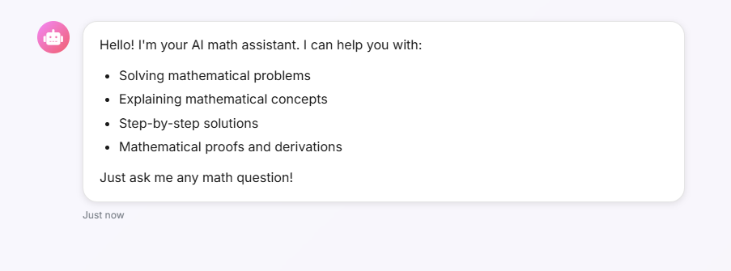
Math Study Assistant
An intelligent AI-powered study assistant that provides step-by-step solutions and explanations for Math, SQL, and Astronomy questions. Built with Google Gemini AI, and Pinecone vector database for enhanced learning experiences.
- Implemented multi-subject support for Math, SQL, and Astronomy with AI-powered responses using Google Gemini 2.0 Flash.
- Developed step-by-step solution generation with clear, educational explanations and proper methodology.
- Built intelligent vector search system using Pinecone for retrieving relevant textbook content and context.
- Created session management system with Redis for maintaining conversation context across multiple questions.
- Designed modern web interface with real-time chat interactions and responsive design.
- Deployed using Docker containerization, AWS ECR for image registry, AWS Lambda for serverless execution, and API Gateway for RESTful endpoints.
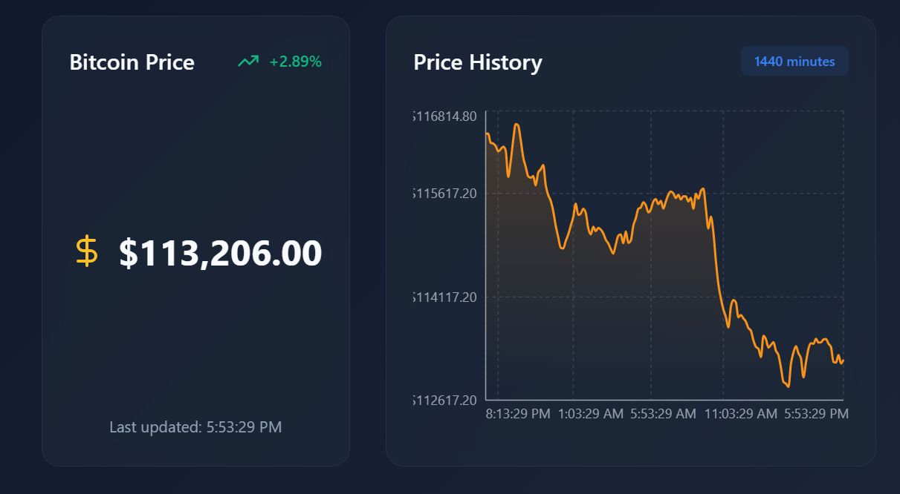
Crypto Dashboard — Real-Time Cryptocurrency Analytics
Built a full-stack, cloud-deployed crypto analytics platform delivering live market monitoring, advanced statistical insights, AI-assisted querying, and automated PDF reporting with email subscriptions. Frontend on Vercel, Go microservices on Render, Cassandra (AstraDB) for time-series storage, and an EC2 ingestion worker keep the pipeline real-time and resilient.
- Implemented React + TypeScript dashboard with real-time charts and responsive UI, deployed via Vercel CI/CD.
- Developed Go services for ingestion, analytics, reporting, and AI endpoints; exposed REST APIs for
/latest,/history,/average,/range, and/trend. - Designed Cassandra/AstraDB schema optimized for time-series crypto prices and subscriber/verification workflows.
- Scheduled CoinGecko data fetcher as an EC2
systemdservice with CloudWatch monitoring; backend hosted on Render with health checks. - Added AI features: natural-language → CQL translation and daily report summaries using GPT.
- Automated multi-page PDF generation (charts via gonum/plot, min/max/avg/volatility tables) and email delivery to subscribers.

AI-Powered Resume Q&A System
Built an advanced FastAPI-based Question-Answering system with conversational memory using Redis sessions, intelligent document processing with LangChain, and continuous learning through S3 integration and MongoDB archival. Features real-time chat history and context-aware responses.
- Designed and implemented an AI-powered Q&A backend using FastAPI, GPT-4, and FAISS for context-specific career assistant responses.
- Developed vector similarity search pipelines with OpenAI embeddings and FAISS, integrating resume parsing and semantic chunking.
- Built session management system using Redis with TTL-based chat history retention and UUID-based user tracking.
- Engineered asynchronous logging and archival workflows with AWS S3 and MongoDB, enabling scalable long-term data storage.
- Applied prompt engineering best practices to maintain conversational context and improve accuracy of AI-generated answers.
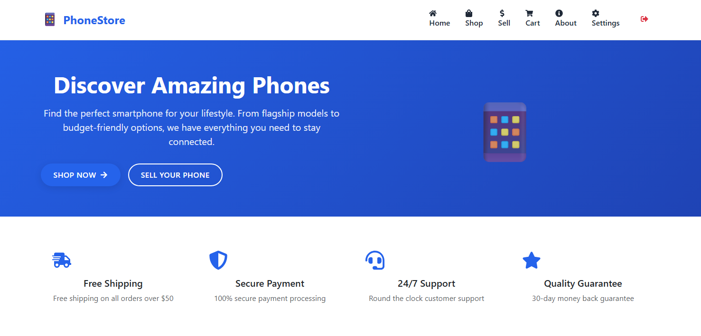
E-commerce Phone Store
Collaborated to build a full-stack online phone store with product listing, cart management, and checkout flow. Implemented responsive design and client-side form validation for improved UX.
- Built a full-stack e-commerce platform for buying and selling phones.
- Implemented product listing, cart management, and secure checkout flow.
- Designed a responsive UI using React and Tailwind CSS.
- Added client-side form validation for enhanced user experience.
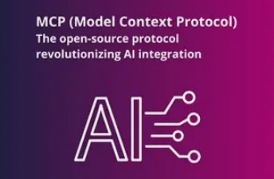
MCP-Auto-ML
An automated machine learning system that extends LLM capabilities through the Model Context Protocol, enabling direct code execution and cloud deployment.
- Implemented a complete ML pipeline with 10 specialized tools following the Model Context Protocol standard.
- Developed data ingestion tools using Kaggle API and pandas for efficient dataset management.
- Created automated data processing pipeline with missing value handling and categorical encoding.
- Built model training system supporting multiple algorithms (Logistic Regression, Random Forest, SVM).
- Integrated AWS S3 for model persistence and MongoDB for data storage.
- Achieved 94.57% accuracy on heart disease dataset using optimized hyperparameters.
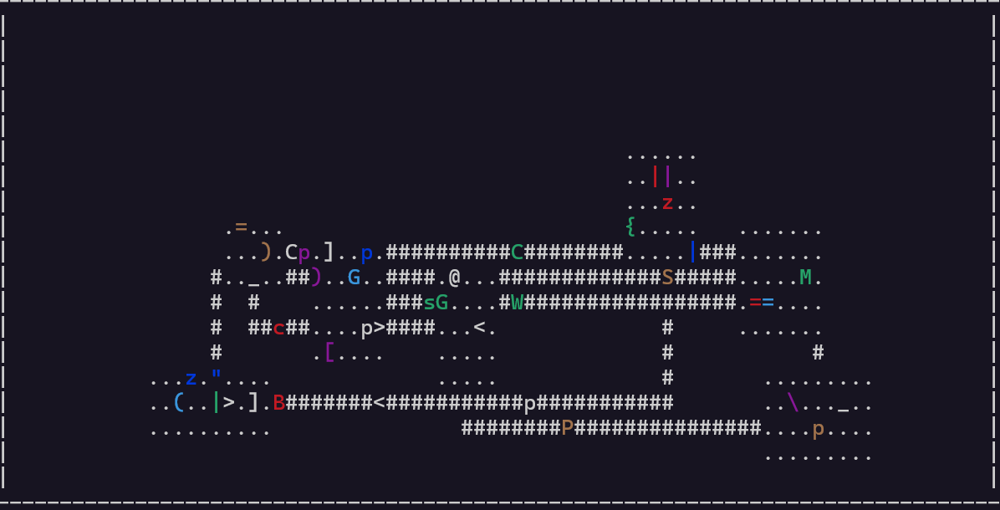
Roguelike Game
A complex roguelike game developed in C/C++ featuring procedural dungeon generation, NPC AI, and interactive gameplay mechanics.
- Implemented procedural dungeon generation with rooms, corridors, and rock formations.
- Developed file I/O system for saving and loading game states with cross-compatibility.
- Created pathfinding system using Dijkstra's Algorithm for both tunneling and non-tunneling NPCs.
- Integrated curses interface for interactive gameplay and fog of war mechanics.
- Implemented monster and object parsing system with custom descriptions.
- Added combat system with hit points and damage dice mechanics.
- Enhanced gameplay with background music and sound effects.
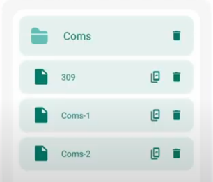
Android App: Netherite Notetaking
AI-powered note-taking app featuring speech-to-text, translation, and AI-powered notes.
- Worked with a team of 4 to create an AI-powered note-taking app.
- Currently handling backend development by creating APIs for frontend use.
- Tech stack: Spring Boot, Java, Maven, MySQL.
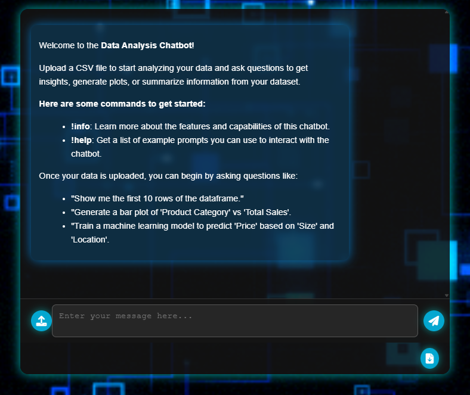
Interactive Data Analysis Platform
Website allowing users to upload CSV files and request graph generation, data manipulation, and basic machine learning models.
- Created a website for data analysis and visualization.
- Integrated AI with OpenAI's API for generating automated Python scripts.
- Used Gemini API to analyze pictures and tables generated by users.
- Tech stack: HTML, CSS, JavaScript, Python, Flask, MongoDB, Render.
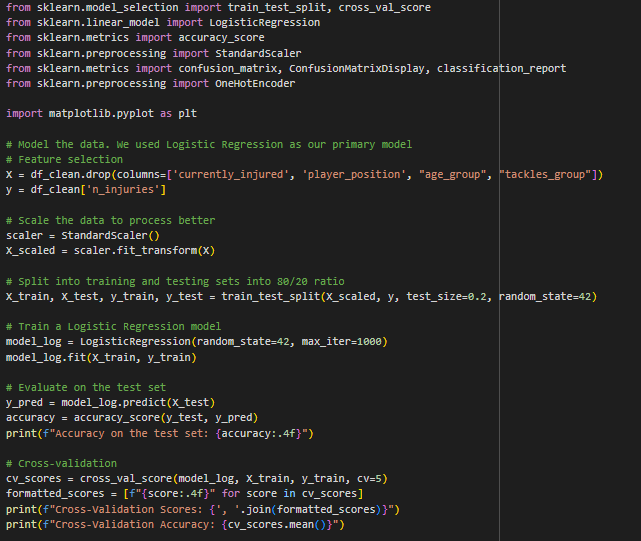
Save the Players!
Analyzed player injury likelihood in soccer using machine learning techniques.
- Analyzed player injury likelihood in soccer using a dataset of 1,903 players.
- Created visualizations to identify patterns in injury data.
- Applied logistic regression, decision trees, and KNN for prediction.
- Results provided insights into injury risks based on player positions.
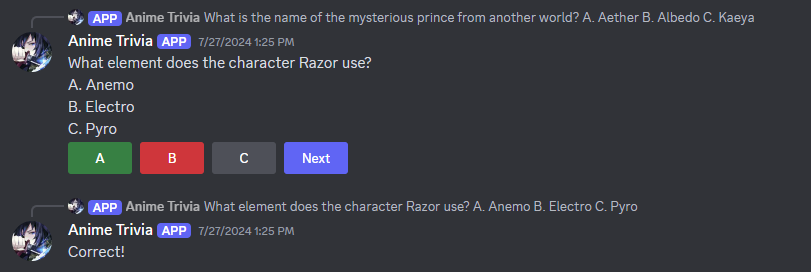
Discord Trivia Bot
Highly accurate Discord bot for handling trivia quizzes with score tracking and multi-server support, deployed on AWS EC2 for continuous availability.
- Engineered a Discord bot for trivia quizzes with score tracking and leaderboard features.
- Deployed the bot on AWS EC2 for 24/7 availability and reliable performance.
- Implemented CI/CD pipeline using GitHub Actions for automated deployment to EC2.
- Utilized Docker for containerization to ensure consistent deployment and operation.
- Integrated MySQL database to store and manage user data.
- Used Discord UI to create buttons for user-friendly gameplay.
- Utilized Google Translate API to provide support for over 25 languages.
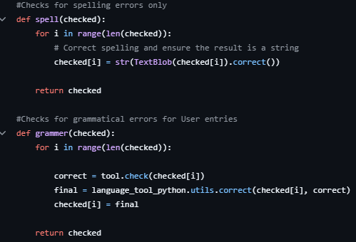
Coding Journal
Terminal-based program for storing and retrieving journal entries with MySQL database integration.
- Created a terminal-based program that stored user data entries into a MySQL database.
- Designed an application for creating, modifying, and retrieving journal entries by date.
- Implemented search functionality by querying the database.
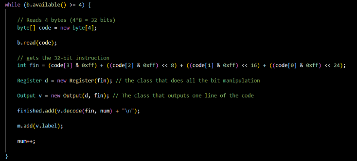
Machine Code Translator
Java-based system for decoding machine code into LEGv8 assembly instructions using bit manipulation techniques.
- Created a class to manage and manipulate 32-bit binary numbers.
- Implemented a class to read binary files and convert them into assembly language.
- Ensured 95% accuracy with label management and conditional branching.
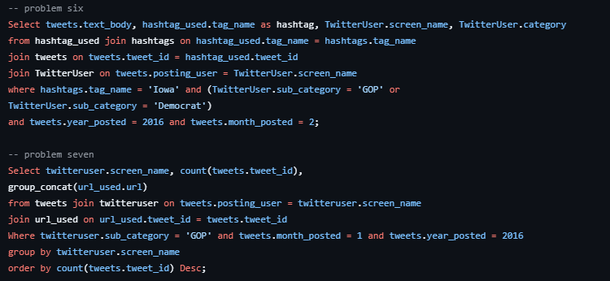
NEO4J & MySQL Database Management
Created and optimized databases using Neo4j and MySQL, with a focus on data integrity and query optimization.
- Created structured Entity-Relationship diagrams for organizational databases.
- Imported CSV files into Neo4j and MySQL environments.
- Developed and optimized query statements for enhanced efficiency.